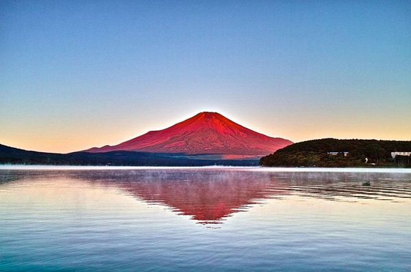
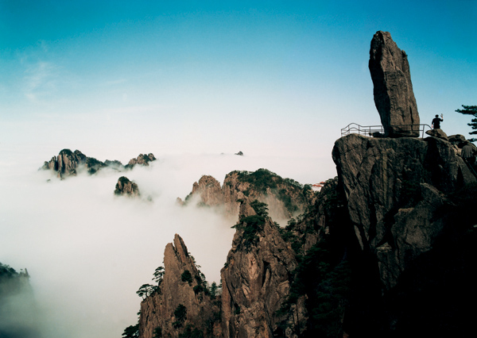
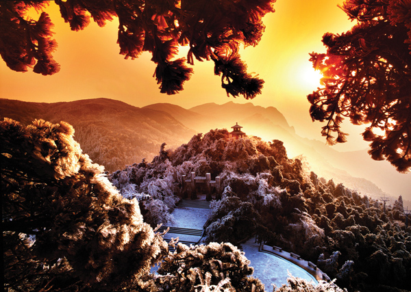
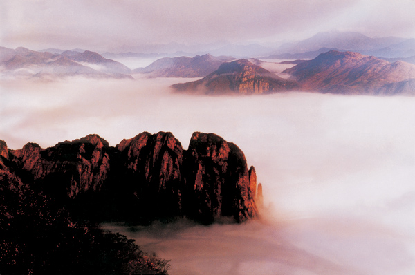
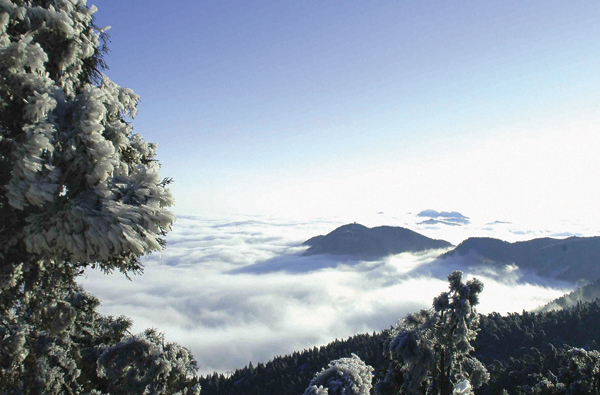

富士山
日本第一高峰
富士山是日本第一高峰，是日本民族的象征，被日本人民誉为“圣岳”。富士山位于本州中南部，东距东京约80千米，，海拔3776米，山峰高耸入云，山巅白雪皑皑。山体呈圆锥状，似一把悬空倒挂的扇子，日本诗人曾用“玉扇倒悬东海天” 、“富士白雪映朝阳”等诗句赞美它。
黄山原名“黟山”，因峰岩青黑，遥望苍黛而名。后因传说轩辕黄帝曾在此炼丹，故改名为“黄山”。黄山代表景观有“四绝三瀑”，四绝：奇松、怪石、云海、温泉；三瀑：人字瀑、百丈泉、九龙瀑。黄山迎客松是安徽人民热情友好的象征，承载着拥抱世界的东方礼仪文化。
黄山
天下第一奇山

明朝旅行家徐霞客登临黄山时赞叹：“薄海内外之名山，无如徽之黄山。登黄山，天下无山，观止矣！”被后人引申为“五岳归来不看山，黄山归来不看岳”。
庐山
“匡庐奇秀甲天下”
雄、奇、险、秀

雁荡山
以山水奇秀闻名，素有“海上名山、寰中绝胜”之誉，史称中国“东南第一山”[1] ，主体位于浙江省温州市东北部海滨，小部在台州市温岭南境。雁荡山形成于一亿二千万年以前，是环太平洋大陆边缘火山带中一座日至纪流纹质破火地。《载敬堂集》载：“雁荡山以瓯江自然断裂，分北雁荡山和南雁荡山。以景观区位分有北雁荡山、南雁荡山、西雁荡山、东雁荡山、中雁荡山之称。”其开山凿胜始于南北朝，兴于唐，盛于宋。历代文人墨客纷至沓来，谢灵运、沈括、徐霞客、张大千、郭沫若等都留下了诗篇和墨迹


衡山
又名南岳、寿岳、南山，为中国“五岳”之一，位于中国湖南省中部偏东南部，绵亘于衡阳、湘潭两盆地间,，主体部分在衡阳市南岳区和衡山、衡阳县境内。衡山的命名，据志书记载，因其位于星座二十八宿的轸星之翼，“变应玑衡”，“铨德钧物”，犹如衡器，可称天地，故名衡山
泰山
位于山东省中部，泰安市之北，总面积250平方公里，古称岱山，春秋时改称泰山，被尊为我国五岳之首，有“中华国山”、“天下第一山”的美誉，又称东岳。古以东方为万物交替、初春发生之地，故泰山有“五岳之长”、“五岳独尊”之誉。泰山拥有丰富的自然遗产，于1987年被列入世界自然文化遗产名录，是中国首例自然文化双重遗产项目。
黄山
位于安徽省南部，属黄山市管辖。传说是中华祖先――轩辕黄帝修身炼丹而飘然成仙的地方。黄山千峰竞秀，万壑峥嵘。有名可指的就有72山峰，其中“莲花”、“光明顶”、“天都”三大主峰，均在海拔1800米以上，拔地极天，气势磅礴，雄姿灵秀。
峨眉山
被称为“峨眉天下秀”的峨眉山位于峨眉山市境内，距乐山市30公里， 高出五岳，秀甲九州，以雄秀壮丽的自然风光和神奇迷人的佛教文化著称于世。主要景观有“双桥清音”等峨眉十景，主峰金顶海拔3079米，有云海、日出、佛光、圣灯“四大奇观”。峨眉山为普贤菩萨的道场，是中国四大佛教名山之一， 同时也是一座天然珍稀动植物乐园和地质博物馆。 峨眉春季万物萌动，郁郁葱葱；夏季百花争艳，姹紫嫣红；秋季红叶满山，五彩缤纷；冬季银装素裹，白雪皑皑。
珠穆朗玛峰
珠穆朗玛峰位于西藏定日县正南方，喜马拉雅中段的中尼边境处。珠穆朗玛，藏语意为“圣母”，它是世界最高大的山系喜马拉雅山的主峰，海拔8,844米，为世界第一高峰。这是中国登山运动员于1975年登上该峰后测定的精确数字，这个数字校正了人们长期坚持的八千八百八十二米的说法。为世界第一高峰。早在1721年，清朝政府编绘的《皇舆全览图》，就采用了“朱姆朗马阿林”之名（“阿林”是满语山峰之意），并精确地标出了它的具体位置。
长白山
位于中国东北吉林省东南部与朝鲜接壤的边陲地带，绵延1000公里，主峰白云海拔2691米，2500米以上山峰16座，总面积为9万平方公里。长白山是个曾有过喷发历史的火山。顶峰天池是个由喷发形成的火山口湖。是国际生物圈保留地的重要组成部分， 林海之内，珍禽异兽和奇花异草应有尽有，许多地方林木繁茂，人迹罕至。 长白火山巨大的山体，在地球重力均衡作用这下在山体四周山麓地带形成下陷盆地和下陷地带――地下森林。
华山
西岳华山位于陕西省西安以东120公里历史文化故地的华阴市境内，北临坦荡的渭河平原和咆哮的黄河，南依秦岭，是秦岭支脉分水脊的北侧的一座花岗岩山。凭藉大自然风云变换的装扮，华山的千姿万态被有声有色的勾画出来，华山是国家级风景名胜区，国家5A级旅游景区。 因华山位于西方，属我国古代西部镇山，故称“西岳”、“华岳”，又因其西有少华山，故亦称“太华山”。华山素有“奇险天下第一山”之誉，数千年来，游人不绝，盛名不衰。 在五岳之中，华山以险著称，登山之路蜿蜒曲折，长达12公里，到处都是悬崖绝壁，所以有“自古华山一条道”之说。
武夷山
古代中国的李商隐、范仲淹、朱熹、陆游、辛弃疾、徐霞客等名家都在武夷山留下各自的墨宝。 武夷山素以其丰富的自然生态资源、独树一帜的风光美景和灿烂悠久的历史文化、天人合一的和谐环境著称，享有“碧水丹山”之美誉，是中国最为优秀的会议旅游胜地之一。
玉山
玉山峰顶有一座3米高的于右任半身铜像。国民党元老于右任晚年对祖国大陆魂牵梦绕，望断情肠，曾在其“国殇”一诗中写到：“葬我于高山之上兮，望我故乡；故乡不可见兮，永不能忘。葬我于高山之上兮，望我大陆；大陆不可见兮，只有痛苦……”。他去世之后，人们根据他的遗愿，雕塑了这座铜像，面对着大陆，安放于玉山峰顶。